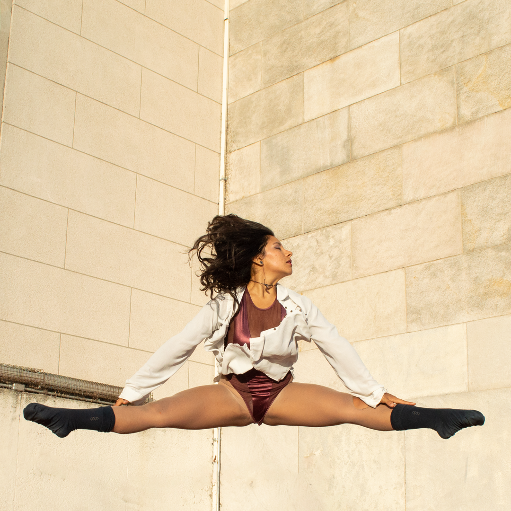

En el movimiento podemos encontrar tres virtudes básicas: pasión, disciplina y belleza. Las tres colisionan después de un salto, en el que realmente dejás de pensar y tratar de entender para pasar a convertirte en movimiento.
Cada unx decide que virtud "explotar" más o también puede elegir llevar las tres al unísono, volviendo el proceso un poco más tedioso pero divertido y variado, además de que el puntualizar una sola termina por quebrarse a lo largo del tiempo.
El exceso de pasión concluye al ser las oportunidades que se te presenten las únicas por elegir, se vuelve todo una gran improvisación desestructurada.
El exceso de disciplina corrompe la creatividad, las estructuras fijas cristalizan y terminan cayendo por sobre-presión.
El exceso de belleza , exagera y pondera por sobre todo la estética que se vuelve, tendiente a la moda y a la visión ajena, lo bello termina volviéndose cartón pintado.
La diversidad de disciplinas, deportes, prácticas, el encuentro de complementos, vuelve de una actividad una obra completa sin tambaleos, adquiere equilibrio por sí sola. El deporte puede ser un gran dispador de esto, pero también puede experimentarse en otras áreas.